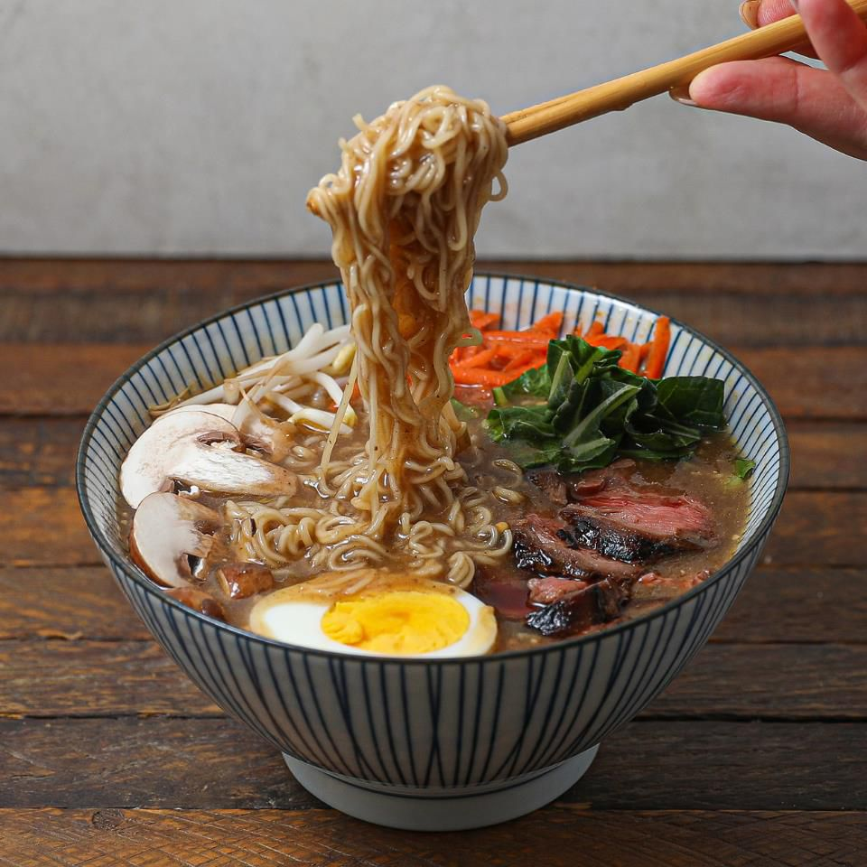

Ramen

Description
Ramen is a basic but tasty meal from Japan but has since
became very popular all around the globe.
Ingridients
- 2 cups of water
- pack of noodles
- Ramen flavoring seasoning
Instructions
- Pour 2 cups of water into a pot
- Break noodles into four and put in pot
- Put the seasoning into pot.
- Put the stove inbetween high and medium
- Let noodles cook until 3 minutes of boiling
- Pour into bowl wait 5 minutes and then enjoy